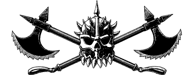

94
The ground to the west of Cetza is flat and featureless and offers very little cover to conceal your approach. Slowly you work your way through the knee-high grasses to within twenty yards of a stone bridge, where the roadway crosses a foul-smelling ditch and enters the town. Your every movement is stiff with caution now, for the bridge is barricaded and you can see the spiky black helmets of the enemy defenders glinting in the moonlight. Snake-like you wriggle forwards, slide down into the ditch and take shelter beneath the stone bridge. With one cheek pressed against the wet stone you strain your ears to hear what the enemy are saying. You recognize their harsh, ugly language—it is Giak—but it is being spoken by human voices. The only humans to speak it so fluently are the Death Knights, the élite of the Drakkarim.
{kind=link}

Suddenly there is a loud splash that sends your pulse racing: a spear has fallen close to where you are hiding and its shaft stands upright in the muddy water. A growling curse is followed by the sound of heavy boots descending the bank as an angry Death Knight comes to retrieve the weapon he dropped.
If you have completed the Lore-circle of Solaris, turn to 13.
If you do not possess mastery of this Lore-circle, pick a number from the Random Number Table. If you possess the Magnakai Discipline of Invisibility, add 2 to the number you have picked.
If your total is now 0–6, turn to 107.
If it is 7 or more, turn to 338.